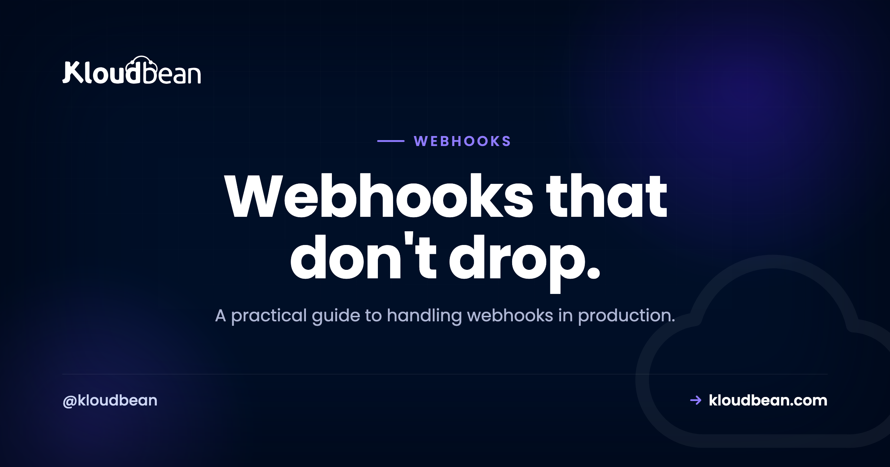
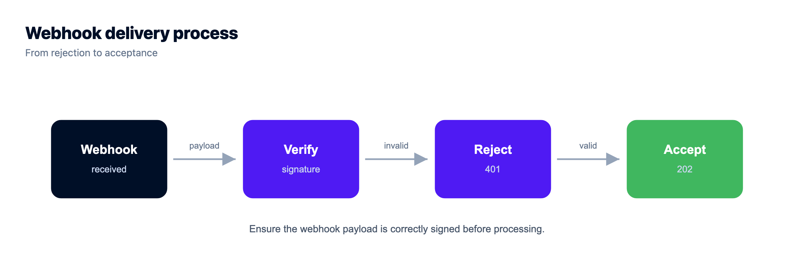
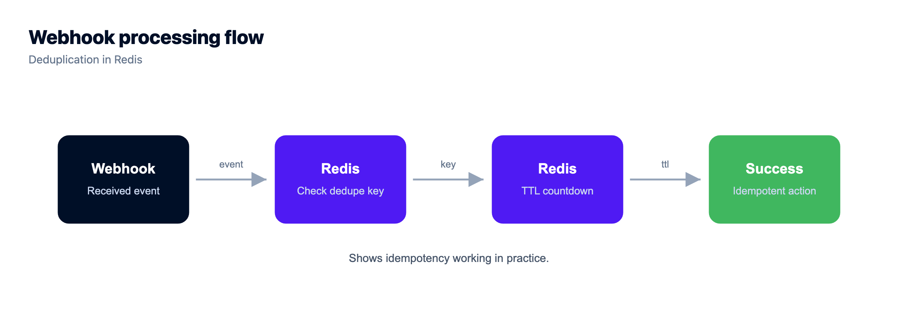
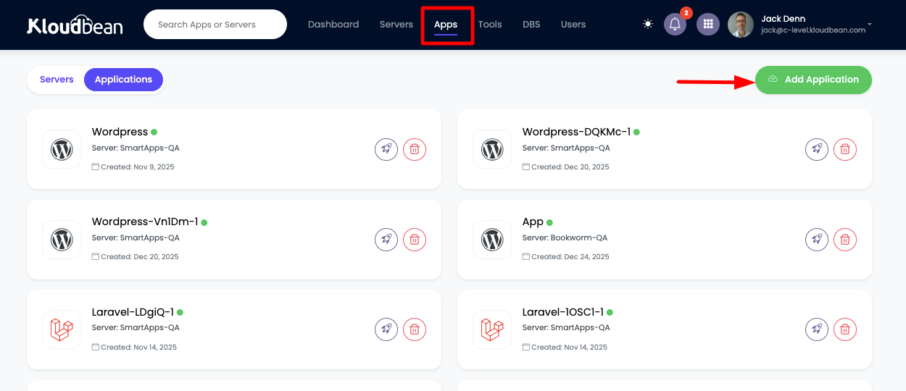
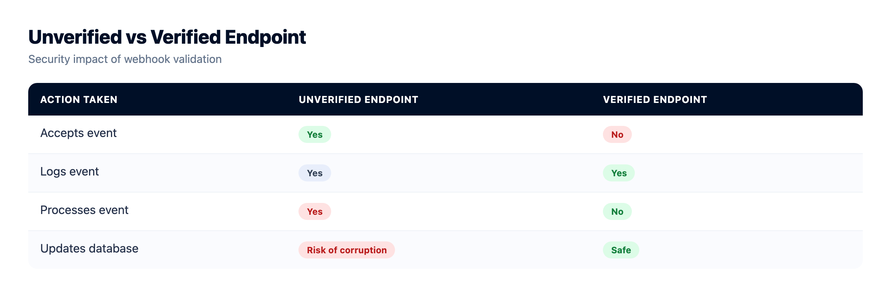

How to Handle Webhooks Reliably in Production

Stripe charges a card. GitHub gets a push. Shopify records an order. Each one fires a webhook, a small HTTP POST to a URL you control, telling your app that something happened somewhere else. Webhooks are how modern services talk to each other without you polling an API every few seconds. They're also where a lot of production apps quietly lose data. This guide covers how to handle webhooks properly on both sides: receiving them without dropping events, and sending them without hammering someone else's server. Real Node and Python code, and the reliability tricks nobody puts in the quickstart.
Verify the HMAC signature on every incoming webhook using the raw request body and a timing-safe compare. Return a 2xx (a 202 is ideal) the moment you've verified and queued the event, then do the real work in a background worker backed by Redis. Make the handler idempotent by deduping on the provider's event id, because providers retry and you will see the same event twice. Keep the signing secret in an environment variable, and serve the endpoint over HTTPS.
What a webhook is, and why webhooks are deceptively hard
A webhook is a reverse API call. Instead of your app asking a provider "anything new?" on a loop, the provider posts to you the instant something happens. You hand them a URL, they send a JSON body to it, your code reacts. That part is genuinely easy. Any web framework can accept a POST in five lines.
The hard parts show up later, in production, and they have nothing to do with the endpoint. They're about trust, speed, and duplicates.
- Trust. The request came in over the public internet. How do you know it actually came from Stripe and not from someone who guessed your URL and wants to fake a "payment succeeded" event?
- Speed. The provider is holding the connection open, waiting for your answer, and it gives up after a few seconds. A slow handler gets marked as a failed delivery.
- Duplicates. Providers retry failed and slow deliveries. "Failed" from their side often just means "you were too slow," so the same event lands two or three times.
Handle those three and you've handled most webhook bugs you'll ever hit.
The shape of a reliable webhook receiver
Here's the flow you're building. The important detail: the slow work happens after you've already answered the provider, not before.
Receiving webhooks without dropping events
Three steps, in this order, every time. Verify, acknowledge, process. Skip any one and you get a bug that only shows up under load, or during a provider's retry storm.
Step 1: Verify the webhook signature (and use the raw body)
Almost every serious provider signs its webhooks. They take the secret you share with them, compute an HMAC (usually SHA-256) over the exact bytes of the request body, and send the result in a header like X-Signature or Stripe-Signature. You compute the same HMAC on your side with the same secret and compare. Match means the request is genuine and untampered. No match means you reject it, full stop.
One detail trips up almost everyone the first time: you have to hash the raw request body, the exact bytes that arrived, not the JSON your framework parsed and re-serialized. Parse it first and the key order or whitespace shifts, your HMAC won't match, and every single verification fails. So verify first, parse second. Always, no exceptions.
import express from "express";
import crypto from "crypto";
const app = express();
// Grab the RAW body for this route. The signature is computed over the exact
// bytes that arrived, so JSON parsing must not touch them first.
app.post(
"/webhooks/stripe",
express.raw({ type: "application/json" }),
(req, res) => {
const secret = process.env.WEBHOOK_SECRET;
const sent = req.get("X-Signature") || "";
const expected = crypto
.createHmac("sha256", secret)
.update(req.body) // req.body is a Buffer here
.digest("hex");
const a = Buffer.from(sent);
const b = Buffer.from(expected);
// timingSafeEqual throws on a length mismatch, so check length first.
if (a.length !== b.length || !crypto.timingSafeEqual(a, b)) {
return res.status(401).send("invalid signature");
}
const event = JSON.parse(req.body.toString("utf8"));
webhookQueue.add("incoming", { event }); // hand off, do not process here
return res.status(202).send("accepted");
}
);Same idea in Python. FastAPI hands you the raw body with await request.body(), and hmac.compare_digest is the timing-safe compare you want:
import hmac, hashlib, json, os
from fastapi import FastAPI, Request, Response, HTTPException
app = FastAPI()
SECRET = os.environ["WEBHOOK_SECRET"].encode()
@app.post("/webhooks/stripe")
async def receive(request: Request):
raw = await request.body() # raw bytes, before parsing
sent = request.headers.get("X-Signature", "")
expected = hmac.new(SECRET, raw, hashlib.sha256).hexdigest()
# constant-time compare, never use ==
if not hmac.compare_digest(sent, expected):
raise HTTPException(status_code=401, detail="invalid signature")
event = json.loads(raw)
process_webhook.delay(event) # Celery task, returns instantly
return Response(status_code=202)stripe.webhooks.constructEvent() does the HMAC check plus a timestamp check that blocks replay attacks. The manual version above is what you write when a provider doesn't give you an SDK, which is more often than you'd think.
Step 2: Respond to the webhook fast, process it later
The provider is holding a connection open, waiting for your status code. Most give you something like 10 seconds, some are stricter. If you charge a card, write to the database, call two other APIs, and send an email all inside the request handler, you will eventually blow that timeout. The provider marks the delivery failed and retries. Now you're doing that whole slow chain twice, on what is really the same event.
The fix is to split acknowledgement from processing. Verify the signature, drop the event onto a queue, and return 202 Accepted immediately. A separate worker picks the job up and does the real work whenever it's ready. Your endpoint answers in a few milliseconds instead of a few seconds, and the provider is happy.
This is where you process webhooks asynchronously with a real queue. On Node that's BullMQ, on Python it's Celery, and both use Redis as the broker. Here's the Node worker, a separate process from the web endpoint:
import { Queue, Worker } from "bullmq";
const connection = { host: process.env.REDIS_HOST, port: 6379 };
export const webhookQueue = new Queue("incoming", { connection });
// A separate worker process does the slow work, off the request path.
new Worker(
"incoming",
async (job) => {
const { event } = job.data;
// Idempotency: only the first delivery of this id gets through.
const fresh = await redis.set(`wh:${event.id}`, "1", "NX", "EX", 86400);
if (!fresh) return; // duplicate, no-op
await handleEvent(event); // charge, email, update, whatever
},
{ connection }
);The Python equivalent is a Celery task. The web process already called process_webhook.delay(event) above, which just pushes the job to Redis and returns:
from celery import Celery
import os, redis
celery = Celery(broker=os.environ["REDIS_URL"])
r = redis.from_url(os.environ["REDIS_URL"])
@celery.task
def process_webhook(event):
# dedupe by the provider's event id
if not r.set(f"wh:{event['id']}", "1", nx=True, ex=86400):
return # already handled, skip
handle_event(event) # the actual workOn Kloudbean this maps cleanly onto one server. Your Node or Python app is the receiver, a managed Redis sits on the same server as the broker, and the worker is another process running beside the app. The full setup, including how to keep the worker alive, is in the guide to running Celery with managed Redis. Redis is one click to launch, locked to your app server's IP, and backed up.
Step 3: Make the handler idempotent (dedupe duplicate webhook events)
Since retries are a fact of life, your worker has to treat a repeated event as a no-op. If a payment.succeeded webhook fires twice and you credit the account twice, that's a real bug with real money on it. Webhook idempotency is not optional for anything that touches billing.
Every decent provider stamps a unique id on each event (evt_1abc, a delivery UUID, whatever shape it takes). Dedupe on that. Record the id before you act; if you've seen it, stop. Both samples above do this with Redis SET ... NX, which only writes the key if it doesn't already exist. First delivery wins.
Redis is the fast option. For anything financial, a unique constraint on an event_id column in your database is stronger, because it survives a Redis flush and the insert fails loudly on a duplicate:
-- Postgres / MySQL: the database refuses a second insert of the same event
CREATE TABLE processed_events (
event_id TEXT PRIMARY KEY,
handled_at TIMESTAMPTZ NOT NULL DEFAULT now()
);
-- INSERT ... ON CONFLICT DO NOTHING -> 0 rows means "already processed"Out-of-order delivery is the cousin of duplicates. Retries mean an updated event can arrive before the created one, so don't assume order. Where it matters, check a timestamp or version and ignore anything older than the state you already have.

What status code should a webhook return?
Your response code is an instruction to the sender, not just a formality. Get it wrong and you either lose events or drown yourself in retries. Here's the practical mapping every provider follows:
| Your response | What the sender does | When to send it |
|---|---|---|
| 2xx (200, 202) | Delivered. Stops retrying. | You verified and queued the event. 202 fits async work best. |
| 400 / 422 | Does not retry. Treats it as broken. | Malformed payload you can't parse. Retrying won't fix it. |
| 401 / 403 | Does not retry. | Signature check failed. Reject and move on. |
| 429 | Backs off, retries later. | You're rate limiting the sender on purpose. |
| 5xx or timeout | Retries with backoff. | A transient error on your side. Let it come back. |
The subtle trap: don't return 200 when your handler actually failed. If enqueuing the job throws and you still answer 200, the provider never resends, and you've silently dropped the event. Return a 5xx on a real failure so the retry works for you.
Common webhook mistakes, and the fix for each
A pattern we see constantly: an integration works perfectly in testing, then falls over on the first busy day, and it's almost always one of these.
- Parsing the body before verifying. Your JSON middleware rewrites the bytes, the HMAC no longer matches, and legitimate events get rejected as forgeries. Capture the raw body for the webhook route and verify against that.
- Doing slow work inline. The provider times out, marks it failed, and retries. Now you're processing the same event two or three times and wondering why. Queue it, answer 202, process in a worker.
- No idempotency. Duplicates double-charge, double-email, double-ship. Dedupe on the event id in Redis or with a unique constraint before you do anything with side effects.
- No signature check at all. An open endpoint means anyone who finds the URL can POST a fake "subscription upgraded" event. Always verify. An unverified webhook endpoint is a public write API to your business logic.
- Logging the raw secret or full payload. Secrets end up in your log aggregator, payloads leak customer data. Log the event id and type, not the body, and never the signing secret.
Sending webhooks: doing unto others
If your product is the one firing webhooks, every rule above flips around. Your consumers need to trust you, and you need to deliver reliably without giving up too early or retrying forever.
- Sign your payloads. Compute an HMAC over the body and send it in a header so consumers can verify you. Document the scheme so they can reproduce it.
- Deliver from a queue. Never send the webhook inline in the request that triggered it. A slow consumer would tie up your own API. Enqueue the delivery and let a worker handle it.
- Retry with exponential backoff. Treat any non-2xx or timeout as a failure and retry on a widening schedule (roughly 1s, 2s, 4s, 8s), with a cap and a dead-letter after a handful of attempts.
- Set a short timeout. A few seconds, no more. One unresponsive consumer shouldn't hold a worker hostage.
- Send a stable event id. Put a unique id in a header so consumers can dedupe on their end, the same way you would.
The delivery function itself is small. Sign, POST with a timeout, and throw on any non-2xx so the queue's retry kicks in:
import crypto from "crypto";
function sign(body, secret) {
return crypto.createHmac("sha256", secret).update(body).digest("hex");
}
async function deliver(endpoint, payload) {
const body = JSON.stringify(payload);
const res = await fetch(endpoint.url, {
method: "POST",
headers: {
"Content-Type": "application/json",
"X-Webhook-Signature": sign(body, endpoint.secret),
"X-Event-Id": payload.id, // stable id so consumers can dedupe
},
body,
signal: AbortSignal.timeout(5000), // short timeout, fail fast
});
// Any non-2xx (or a timeout) throws, which tells the queue to retry.
if (!res.ok) throw new Error(`delivery failed: ${res.status}`);
}And the retry policy lives in the queue, not in your own hand-rolled loop. With BullMQ it's a couple of options:
// Retry with exponential backoff: about 1s, 2s, 4s, 8s, 16s, then give up.
await deliveries.add(
"deliver",
{ endpoint, payload },
{ attempts: 6, backoff: { type: "exponential", delay: 1000 } }
);Keep the endpoint URL configurable per customer, in the database or their settings, so people can change where their webhooks go without a deploy from you.
Deploy a reliable webhook receiver on Kloudbean
A webhook receiver is a normal Node or Python app, a Redis queue, and a worker. Here's how the pieces land on Kloudbean, all on one server.
- Add your app. Create a Node or Python application for the receiver. Point it at your GitHub repo and every push builds and deploys. Express, FastAPI, Django, and Flask all work the same way, your webhook route is just an endpoint in the app.

- Store the signing secret as an environment variable. Open Runtime Configuration and add
WEBHOOK_SECRET. It lives on the server, never in your code or Git history, and you can rotate it without a code change. More on doing this cleanly in environment variables done right.

- Launch managed Redis for the queue. From the DBS section, launch a Redis instance. It comes up locked to your app server's IP, one click, and it's backed up. That's your BullMQ or Celery broker, reachable by the app internally and not exposed to the internet.

- Run the worker. The BullMQ or Celery worker is a second process beside the web app on the same server. It pulls jobs off Redis and does the slow work. The Celery with Redis guide walks through keeping it running. Your endpoint is already on HTTPS with free SSL, which webhooks require.
The guides on deploying a Node app, deploying Express, and deploying FastAPI cover the app side end to end.
Webhook security checklist
Webhook security comes down to a handful of habits. Skip any one and endpoints get abused.
- Always verify signatures. An endpoint that accepts unverified POSTs is a write path into your app that strangers can call.
- HTTPS only. Free SSL is on, so there's no reason a secret or a payload should ever travel in plaintext.
- Secret in an environment variable. Never in code, never committed. Rotate it on a schedule; because it's an env var, that's a config change.
- Timing-safe compare. Use
crypto.timingSafeEqualorhmac.compare_digest, not==, so you don't leak the secret one byte at a time through response timing. - Don't trust the payload for authorization. Before doing something sensitive, re-fetch the object from the provider's API by id. A verified signature proves the message is authentic, not that the state in it is still current.
- Allowlist source IPs if published. Some providers publish their egress IP ranges. If yours does, restrict to them. Kloudbean's Shorewall firewall and Fail2ban already blunt random abuse at the edge.

One dashboard for the whole stack.
Pick from seven clouds, run your app on a managed server you control, and keep databases, storage, and deploys in the same dashboard instead of four separate vendors.
- ✓ Seven cloud providers
- ✓ Managed databases
- ✓ Object storage
- ✓ Automatic backups
- ✓ Free SSL
- ✓ Git deploy
- ✓ Free migration assistance
FAQ
How do I verify a webhook signature?
Compute an HMAC (usually SHA-256) over the raw request body using the signing secret you share with the provider, then compare it to the signature they sent in a header, using a timing-safe comparison. If the two match, the request is genuine and untampered. Always hash the raw bytes, not the parsed JSON, and reject a mismatch with a 400 or 401.
Should I process webhooks synchronously or with a queue?
With a queue, for anything that isn't trivial. Verify the signature, enqueue the event, and return 202 immediately, then let a background worker do the real work. Processing inline risks blowing the provider's timeout, which triggers a failed delivery and a retry, so you end up doing the same slow work twice.
How do I handle duplicate webhook events?
Dedupe on the provider's event id. Before your worker acts, record the id in Redis with SET NX or in a database column with a unique constraint. If the id is already there, treat the event as handled and return without doing the work again. Providers retry deliveries, so you will receive duplicates, and idempotency is what keeps them harmless.
What status code should a webhook return?
Return a 2xx once you've verified and queued the event; a 202 is a good fit for async processing. Return a 400 or 401 for a bad payload or a failed signature so the provider stops retrying. Return a 5xx or let it time out for a transient error on your side, which tells the provider to retry with backoff.
Why must I use the raw request body to verify a webhook?
Because the HMAC is computed over the exact bytes the provider sent. If your framework parses the JSON and re-serializes it, whitespace and key order can change, so your recomputed signature no longer matches and every verification fails. Capture the raw body for the webhook route and verify against that before parsing.
How do I secure a webhook endpoint?
Verify every signature, serve the endpoint over HTTPS, keep the signing secret in an environment variable, and use a timing-safe compare. Don't trust the payload contents for authorization; re-fetch sensitive objects from the provider's API by id. If the provider publishes source IP ranges, allowlist them.
How many times will a provider retry a webhook?
It varies by provider, but most retry failed or timed-out deliveries several times over minutes or hours on a backoff schedule, then give up. That's exactly why idempotency matters: across those retries you may receive the same event more than once, and your handler needs to make repeats a no-op.
Can I use Redis as the webhook queue?
Yes, and it's the common choice. BullMQ on Node and Celery on Python both use Redis as the broker. On Kloudbean you launch a managed Redis locked to your app server's IP with one click, point your app and worker at it, and it's backed up for you. Redis also works nicely as the store for your idempotency keys.
How do I test webhooks during development?
Use the provider's own test or "send test event" feature where they have one, and a tunneling tool to expose your local endpoint over HTTPS while you build. Log the event id and type as they arrive so you can confirm verification passed and the job was queued. Once it works locally, deploy the same code and point the provider at your live HTTPS URL.